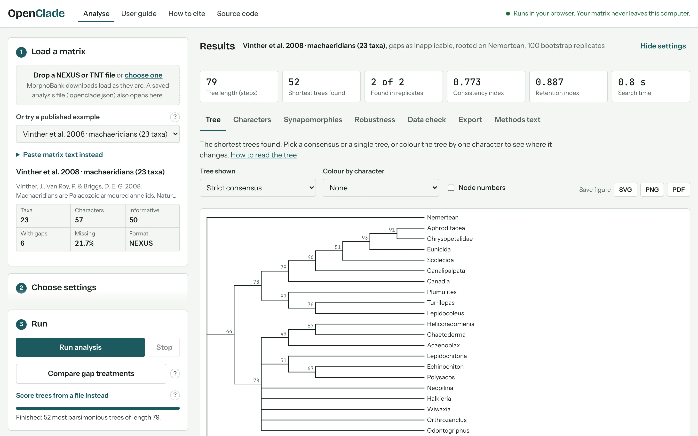
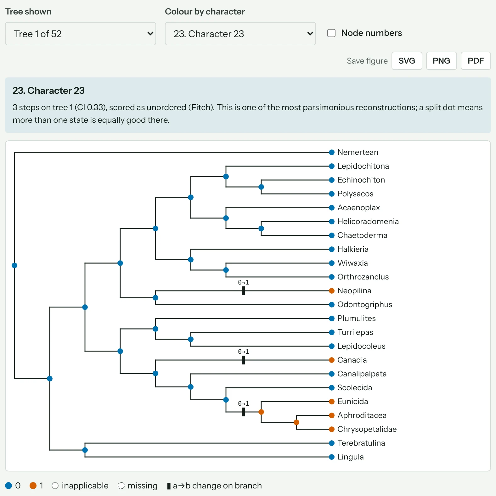
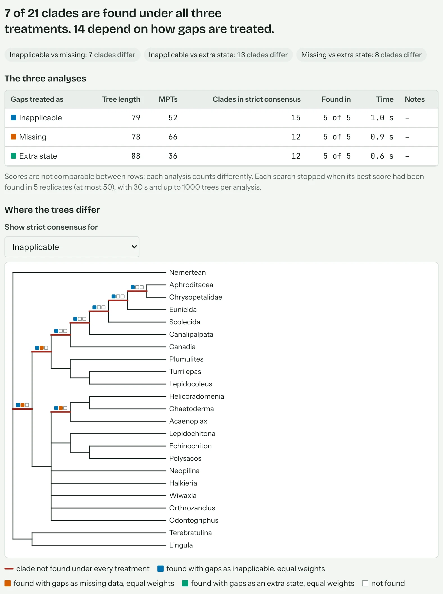

User guide
OpenClade finds the most parsimonious trees for a morphological character matrix, in your browser. This guide covers each step, from loading a matrix to writing up the results.
On this page
- Quick start
- Preparing your matrix
- Gaps and inapplicable characters
- Weighting and character settings
- Rooting the tree
- Search settings
- Branch support
- Reading the results
- Synapomorphies
- Comparing analyses
- The data check
- Your own trees
- Exporting and saving
- How to cite
- Troubleshooting
- Limitations
- Glossary
Quick start


- Load a matrix. Drop a NEXUS or TNT file onto step 1, or choose a published example to try things out. Matrices downloaded from MorphoBank load as they are.
- Check the summary. Step 1 then shows the number of taxa and characters, and warns about anything odd in the file, such as a row with too few characters.
- Choose settings. The defaults suit a first look: gaps as inapplicable, equal weights, a Standard search and 100 bootstrap replicates. Choose the taxon to root the tree on. If the file orders, weights or excludes characters, those settings are already filled in.
- Press Run analysis. Results appear on the right as soon as the search finishes. The tabs show the tree, per-character statistics, the changes on each branch, a comparison of analyses, a check of the matrix, exports and a methods paragraph.
Your matrix stays on your computer. The page reads the file in the browser and runs the analysis there; nothing is uploaded. Nothing is saved either, so download what you need before you close the tab. The analysis file in the Export tab holds the matrix, the settings and the result in one file that opens here again.
Before you publish
- Run a Thorough search, and raise the time limit if the result says the limit was reached.
- Check Found in replicates: the best length should have been found in every replicate asked for (10 for Thorough). Then run again with a different random seed; both runs should find the same length.
- Check that ordered, weighted and excluded characters are set as in your study (Character settings).
- Raise Trees to keep until the number of shortest trees found is below the limit, so the strict consensus includes every tree.
- Use 1000 bootstrap or jackknife replicates.
- If your matrix has gaps, use Compare gap treatments and report the result. Look at the data check for cells that may be miscoded.
- Save the analysis file and deposit it with your data, so that a reviewer can open it and run the analysis again.
- Cite OpenClade and the methods it uses (see How to cite).
Preparing your matrix
OpenClade reads two formats.
- NEXUS (
.nex,.nexus,.nxs) - A DATA or CHARACTERS block with a MATRIX command, as written by MorphoBank, Mesquite and PAUP*. Interleaved matrices, quoted taxon names, a TAXA block, and character and state names (CHARSTATELABELS, CHARLABELS, STATELABELS) are all read. Names then appear in the Characters tab and when you colour the tree by a character.
- TNT (
.tnt,.ss) - An
xreadcommand, including matrices split into blocks with&.
You can also paste matrix text into step 1 with Paste matrix text instead.
How cells are read
| In the file | Meaning | How OpenClade treats it |
|---|---|---|
0–9, letters | A character state | One state. Up to 30 states per matrix. Letters are not case-sensitive unless the FORMAT command says RESPECTCASE. |
? | Missing data: the state exists but is unknown | Could be any state. |
- | Gap: the character does not apply to this taxon | Depends on the gap treatment you choose; see the next section. |
(01) or {01} in NEXUS, [01] in TNT | Polymorphic or uncertain | The taxon may have any of the listed states. |
Character settings in the file are applied. Ordered characters, weights and excluded characters are read from a NEXUS ASSUMPTIONS, SETS or PAUP block (TYPESET, WTSET, EXSET, CHARSET, CTYPE, WEIGHTS, EXCLUDE) and from TNT ccode; TNT piwe turns on implied weighting. Step 1 says what was found, and you can change it in step 2 (Character settings). Step matrices and irreversible or Dollo characters are not supported: those characters are analysed as unordered, with a warning.
The data summary
- Taxa and characters
- The rows and columns of the matrix.
- Informative
- Characters with at least two states that each occur in two or more taxa. Only these can make one tree shorter than another.
- With gaps
- Characters that contain at least one gap (
-). - Missing
- The share of all cells scored
?. - Polymorphic
- Cells with more than one state. Shown instead of the file format when there are any.
Warnings and what to do
| Message | What to do |
|---|---|
| Rows with the wrong number of characters | A row is too long or too short. Common causes are a missing cell, a stray character, or a polymorphism written without brackets. Fix the rows named in the message. |
| Header says N taxa but M rows were read | NTAX in DIMENSIONS does not match the matrix. Often a taxon name with spaces is not in quotes, so it is read as two rows. |
| Symbols not declared in FORMAT SYMBOLS | The matrix uses a state the header does not list. OpenClade adds it; check that it is not a typing error. |
| Duplicate taxon name | Two rows share a name. Rename one: trees identify tips by name. |
| Taxon has no scored characters | Every cell is ? or -, so the taxon can sit anywhere in the tree. Consider removing it. |
| This file orders, weights or excludes characters | Not a problem: OpenClade applies these settings. Check them under Characters in step 2. |
| This file uses step matrices, or irreversible or Dollo characters | OpenClade does not support these. The characters are analysed as unordered, so lengths can differ from the original analysis. |
| Cells may be coded inconsistently with the character they depend on | See the data check. |
Gaps and inapplicable characters
In a morphological matrix, a gap (-) usually means that a character does not apply. An animal without a tail has no tail colour. A ? means something different: the state exists, but nobody knows it. How gaps are counted can change which tree is shortest, so OpenClade lets you choose.
- Inapplicable (the default)
- Uses the algorithm of Brazeau, Guillerme & Smith (2019), as in the TreeSearch package for R. Tail colour is counted only where tails exist, and a red tail that evolves twice counts as two origins of red. Following TreeSearch, the algorithm is used for characters with three or more gaps; in characters with one or two gaps, gaps are read as missing.
- Missing
- Gaps are read as
?, as in the default settings of TNT and PAUP*. A tailless ancestor can be given any tail colour, so a colour that appears twice can cost nothing. - Extra state
- A gap is one more state, like
0or1. Gaining or losing a tail is then counted twice: once in the tail character and again in tail colour.
A worked example
Seven animals are scored for three characters. Tail colour is inapplicable (-) in the three animals without a tail.
| Taxon | Tail | Tail colour | Stripes | As coded |
|---|---|---|---|---|
| Outgroup | absent | – | absent | 0 - 0 |
| A, B | present | red | absent | 1 1 0 |
| C, D | absent | – | present | 0 - 1 |
| E, F | present | red | present | 1 1 1 |
Tree X
One red tail, inherited by A, B, E and F. Stripes appear twice.
Tree Y
Stripes appear once, but the red tail evolves twice: in A and B, and again in E and F.
| Gaps treated as | Tree X | Tree Y | Shorter tree |
|---|---|---|---|
| Inapplicable | 3 | 4 | X |
| Missing | 3 | 3 | Neither: a tie |
| Extra state | 4 | 5 | X |
Which should I use?
Use inapplicable when your gaps mean "does not apply". That is the usual case when a matrix scores the presence of a structure in one character and its features in others. Use missing to repeat an analysis that was run in TNT or PAUP* with default settings. Report the treatment in your methods. Reviewers may ask how much it matters, and Compare gap treatments answers that in one run.
Weighting and character settings
- Equal weights (the default)
- Every step counts the same. The best trees are those with the fewest steps.
- Implied weights (Goloboff 1993)
- A character that fits the tree badly counts for less. A character with e extra steps (steps beyond the fewest it could have) costs e / (e + k), and the best trees are those with the lowest total, the fit. A lower k downweights homoplasy more strongly. The default here is 12; TNT's default is 3. The result reports the fit to five decimals and, for reference, the number of steps.
The fit is calculated as in TNT and TreeSearch. For characters scored with the inapplicable algorithm, extra steps are counted from the fewest steps the character could have if its applicable states formed one region. An ordered character is weighted as one character.
Ordered, weighted and excluded characters
Under Characters in step 2, list the ordered characters and the excluded characters by number, with ranges: 3 7 12-15. Numbers count from 1, as in NEXUS (TNT counts from 0). Both boxes are filled in from the file when it has these settings, and what you type replaces them. Weights come from the file only; untick Use the character weights in the file to give every character weight 1.
- Ordered (additive) characters
- A change from state 0 to state 2 costs two steps, through state 1. States are ordered 0 to 9, then A to Z. A cell with several states, such as
(02), is read as the range from its lowest to its highest state, as in TNT. - Ordered characters with gaps
- With gaps as missing data, a gap can be any state. With gaps as inapplicable, changes are counted within each region of the tree where the character applies, and each extra region costs one step, whatever the number of states. With gaps as an extra state, a gap has no place in the order, so an ordered character that contains gaps is analysed as unordered; the result says when this happens.
TreeSearch reaches ordered characters by splitting them into binary characters (TreeTools::Decompose()). For ordered characters without inapplicable tokens the two programs give the same lengths. For ordered characters scored with the inapplicable algorithm, TreeSearch counts an extra region once for each binary character, so its lengths are larger. The validation report gives the details.
Rooting the tree
The length of a tree does not depend on where it is rooted. So the outgroup does not change which trees are shortest; it changes how they are drawn, and which groups count as clades in the consensus trees and support values.
Choose a taxon outside the group you are studying under Root the tree on (outgroup).
If you have several outgroup taxa, choose the most distant one there, open More than one outgroup taxon and select the others. Trees are then drawn with the root between the outgroup and the rest. If the outgroup taxa do not sit together in a tree, that tree is rooted on the first one alone and the legend says so. Tick Require the other taxa (the ingroup) to form a clade to search only among trees in which they do; that is a constraint, and it can make the trees longer.
Search settings
There are too many trees to check them all: more than 1020 for 20 taxa. Like TNT and PAUP*, OpenClade searches heuristically. A search is a series of independent replicates. Each one:
- builds a starting tree by adding taxa in a random order (a random addition sequence);
- rearranges branches, first by SPR and then by TBR, for as long as that makes the tree shorter;
- tries to escape that local optimum several times, alternating the parsimony ratchet (Nixon 1999: give a random quarter of the characters double weight, search, restore the weights, search again) and tree drifting (Goloboff 1999: accept a few slightly worse rearrangements, then search again).
Replicates are added until the best length has been found in a set number of them, on the reasoning that a length reached again and again from different starting points is probably the shortest. Then the best trees of the replicates are combined by tree fusing (Goloboff 1999), and every equally short tree that TBR can reach from them is collected.
Search effort
| Setting | Stops when the best length has been found in | Replicates run | Ratchet and drift rounds each | Use for |
|---|---|---|---|---|
| Quick | 2 replicates | 2 to 10 | 4 | A first look, or checking that a matrix loads correctly |
| Standard | 5 replicates | 10 to 50 | 10 | Most matrices |
| Thorough | 10 replicates | 20 to 200 | 20 | Final analyses |
The minimum is there because a few replicates in a row can all stop at the same local optimum. On one test matrix (Aguado 2009), five replicates in succession found trees one step longer than the best known.
Constraints
Under More settings, a constraint limits the search to trees with, or without, a group. Write one group per line, with taxon names separated by commas:
Taxon A, Taxon B, Taxon C
not: Taxon D, Taxon EThe first line keeps only trees in which A, B and C form a clade. The second keeps only trees in which D and E do not form a clade on their own. Comparing the length of the best constrained tree with the unconstrained length tells you how many extra steps a hypothesis costs. Groups that must form clades have to be compatible with each other: nested or separate, not overlapping.
More settings
- Trees to keep (default 100, up to 5000)
- The search stops collecting equally short trees at this number. The consensus trees summarise only the trees kept, so if the result says "100+", more trees exist and the strict consensus may look better resolved than it really is. Raise the limit for a final analysis.
- Time limit (default 300 seconds)
- A safety stop. If it is reached before the search has finished, the best trees so far are reported with a warning. Branch support then gets the same amount of time again.
- Random seed
- The same seed and settings give the same result on any computer and with any number of CPU cores, because each replicate depends only on the seed and its own number. The one exception is a search cut short by the time limit. Change the seed to check a result from different starting trees.
- CPU cores
- Replicates are handed to this many parallel workers. This changes how long the search takes, not its result. On computers with four or more cores the default leaves one free, up to a maximum of 8.
- Collapse branches with no support
- A branch has no support when every character can be reconstructed without a change on it (its minimum length is zero; TNT's collapsing rule 1). With this ticked, such branches are collapsed, identical trees are merged, and the single trees and consensus trees shown are the collapsed ones. The number of fully resolved trees is still reported. Use it to compare tree counts with TNT.
Did the search find the shortest trees?
No heuristic search can guarantee it. Found in replicates shows the evidence: "5 of 12" means the best length was reached independently in 5 of the 12 replicates used. Good signs are that the number asked for was reached, that the time limit was not, and that a second seed finds the same length. If the result says the best length was found in fewer replicates than asked, or only by fusing trees from different replicates, use Thorough or a longer time limit.
On 31 published matrices of 20 to 88 taxa, a Standard search found the same best length from two seeds on all 31. On one core, 21 finished within 30 seconds and 28 within three minutes; the largest matrices with many gaps reached a 10-minute limit, and on four the best length was found in fewer replicates than asked. OpenClade is slower than TNT, so for very large matrices it is worth checking the result there. The validation report has the table.
Branch support
- Bootstrap (Felsenstein 1985)
- Each replicate draws characters at random, with replacement, until it has as many as the matrix.
- Jackknife (Farris et al. 1996)
- Each replicate deletes each character with probability e−1, about 37%.
- Bremer support, or decay index (Bremer 1994)
- How much worse the best tree without a clade is than the best tree overall: in steps under equal weights, in fit under implied weights. For each clade of the strict consensus OpenClade searches for the best tree that lacks it, starting from the best such tree among all TBR rearrangements of a shortest tree. These searches are heuristic, so a value is an upper bound: the true support cannot be higher, but it could be lower.
Resampling values are drawn above a branch: the percentage of replicates in which that clade was found; "<5" means fewer than 5%. Each replicate runs a fast search (one random addition tree improved by SPR), so values can be a little lower than with a full search in every replicate. Use 100 replicates to explore and 1000 for a paper. Characters are resampled whole: an ordered character stays one character.
Bremer values are drawn below a branch. A "?" after a value means the time limit ended the Bremer searches before that clade had its own; "c" marks a clade you enforced with a constraint. Bremer support takes one more search per clade, so it adds time on large matrices.
Reading the results
The summary numbers
- Tree length (steps)
- The number of character-state changes on the shortest trees found, counting weights. Only comparable between analyses of the same matrix with the same settings.
- Fit (implied weights)
- Shown under implied weights: the quantity the search minimised. The length in steps of tree 1 is shown beside it.
- Shortest trees found
- How many distinct, fully resolved, equally good trees (most parsimonious trees, MPTs) were found. A "+" means the limit on trees to keep was reached. Hover over the number for how many distinct trees remain after collapsing branches with no support.
- Found in replicates
- In how many of the replicates used the best score was reached; see Did the search find the shortest trees?
- Consistency index (CI) and retention index (RI)
- How well the characters fit the tree, from 0 to 1, where 1 means no homoplasy. They are calculated over the characters scored with ordinary (Fitch) parsimony. Characters handled by the inapplicable algorithm are left out, because the usual minimum and maximum numbers of steps do not apply to them.
- Search time
- How long the tree search took, not counting branch support.
The tree
Tree shown switches between the strict consensus (clades found in every shortest tree), the majority-rule consensus (clades in more than half of them, labelled with that percentage) and each single tree. When branch support was run, resampling values are drawn above branches and Bremer values below. Node numbers labels the internal nodes with the numbers used in the Synapomorphies tab. Save figure saves the tree as shown, as SVG or PDF (vector, for Inkscape or Illustrator) or as a PNG image at three times screen resolution.
Colour by character shows how one character changes on a single tree. If a consensus is showing, the view switches to tree 1.

The Characters tab
One row per character: how it is scored (Fitch or the inapplicable algorithm, ordered or not), its weight, the steps it needs on tree 1, its consistency index (CI) and retention index (RI) and, under implied weights, its cost. Excluded characters are greyed. A character with many steps and a low CI changes back and forth on the tree. That can be real homoplasy, but it is also worth checking how the character was scored. Click a row to colour the tree by that character.
Synapomorphies
The Synapomorphies tab lists the character changes on each branch of the tree shown in the Tree tab. Branches are identified by node number (tick Node numbers in the Tree tab to see them on the tree) and by the taxa in the clade. A change is written as character: from→to, and hovering over it shows the character's name.
- On a single tree
- The changes on that tree.
- On the strict consensus
- For each clade of the consensus, the changes found on that branch in every shortest tree. These are the changes that hold whichever shortest tree is right.
Often a character can be reconstructed on a tree in several equally parsimonious ways, which put its changes on different branches. Three ways of listing changes are offered:
- Unambiguous only (the default)
- Changes that are on the branch in every most parsimonious reconstruction. This is the cautious list, and the one to use for diagnosing clades.
- ACCTRAN
- One reconstruction per character: of all the most parsimonious ones, the one with its changes nearest the root. It favours an early origin followed by reversals.
- DELTRAN
- The one with its changes nearest the tips. It favours parallel origins.
ACCTRAN and DELTRAN apply to characters scored with ordinary parsimony. Characters scored with the inapplicable algorithm are always listed by their unambiguous changes. Tick Include terminal branches to list the changes leading to single taxa as well. The list downloads as a table.
Comparing analyses
How much do the results depend on the choices made in the analysis? The Robustness tab runs the same search under several sets of choices and shows which clades survive.
- Compare gap treatments (step 3)
- One click runs the search three times, once per gap treatment, with the weighting chosen in step 2.
- Run comparison (Robustness tab)
- Tick the gap treatments to include, tick equal weights, list any implied-weighting k values (for example
3, 6, 12) and, if you have ordered characters, choose whether to also run with all characters unordered. Every combination is run.
The time limit is split between the analyses, and at least 1,000 trees are kept for each. The tab then shows:
- how many clades of the strict consensus trees are found in every analysis;
- the score, number of trees, consensus size and replicate count of each analysis. Scores are not comparable between analyses, because each counts differently;
- a strict consensus tree on which the branches to clades that depend on the analysis are red. With up to five analyses, squares show which of them find each clade; with more, a label such as 4/6 gives the number;
- a table of those clades; click one to highlight its taxa on the tree;
- downloads, including a consensus tree with each clade labelled by the number of analyses that recover it, and a paragraph for your methods and results that you can copy.

Differences can also come from an incomplete search. If an analysis reaches its time limit or the trees to keep, the tab says so. Raise the limits under More settings and run the comparison again before you report it.
The data check
The Data check tab looks at the matrix itself, before any analysis. It lists the settings found in the file, and it checks how gaps are coded.
The inapplicable algorithm assumes that a gap means "this structure is absent here", and it works best when the presence of the structure is itself a character: tail absent or present, then tail colour. For each character with gaps, OpenClade looks for another character and state that explain where the gaps are, such as "tail: absent" for the gaps of "tail colour". It finds these pairs from the pattern of gaps alone, so they are suggestions: check a pair before acting on it. Where a pair fits at least three quarters of the taxa, the cells that do not fit are listed:
- Contradictions
- A state is scored although the other character says the structure is absent, or a gap is scored although it says the structure is present. One of the two cells is probably wrong.
- Worth a look
- A gap where the other character is unknown (
?): if you do not know whether the tail exists,?is the usual coding for its colour. Or a?where the other character says the structure is absent: a gap says more.
The check does not change your matrix or the analysis. Correct the file and load it again.
Your own trees
Score trees from a file instead, in step 3, reads trees found in another program and scores them against the loaded matrix with the settings of step 2. No search is run. The Tree, Characters and Synapomorphies tabs then work on those trees, so you can map characters and list synapomorphies on trees from TNT, PAUP* or R, and compare their lengths under different gap treatments.
Trees can be in Newick format, a NEXUS trees block (with or without a TRANSLATE table), or TNT's bracket notation as saved by tsave or export, with taxon names or TNT's numbers. Every tree must contain every taxon of the matrix; spaces and underscores in names are treated alike. A tree with polytomies is resolved arbitrarily to score it, so its length is an upper bound, and the result says so.
Exporting and saving
Every block in the Export tab has Download and Copy buttons.
| Export | Use it for |
|---|---|
Shortest trees (Newick, .nwk) | FigTree, iTOL, R (ape::read.tree) and most tree viewers. |
| Strict and majority-rule consensus (Newick) | Figures. Majority-rule node labels are the percentage of trees with that clade. |
| Trees with unsupported branches collapsed (Newick) | The distinct trees left when branches that no character supports are collapsed. |
| Tree with support (Newick) | Tree 1 with bootstrap or jackknife percentages as node labels, and the strict consensus with Bremer values. |
| Trees as a NEXUS file | Mesquite, PAUP* and FigTree. Taxa are numbered, with a translate table. |
Analysis file (.openclade.json) | The matrix, every setting and the result in one file; see below. |
| R script for TreeSearch | Re-scores up to 50 of the trees in the TreeSearch package and prints its lengths beside OpenClade's. A way for you, or a reviewer, to check the result with independent software. |
| MrBayes file | The same matrix, ordered characters, outgroup and constraints, ready for a Bayesian analysis under the Mk model. MrBayes has no character weights and reads gaps as missing. |
| TNT script | Repeating the search in TNT, with ordered characters, weights, inactive characters and implied weighting set. TNT reads gaps as missing data, so lengths can differ from an inapplicable analysis. |
| Tree figure (SVG, PNG, PDF) | The tree as shown in the Tree tab. SVG is in the Export tab; all three are under Save figure above the tree. |
| Synapomorphy list, coding check, clade tables | Tab-separated tables in their own tabs; they open in Excel or R. |
| Methods text | A paragraph for your methods section with your exact settings. Check it before you submit. |
Saving an analysis so that it can be run again
The analysis file holds the text of your matrix, every setting, the random seed, the version of OpenClade and the result: the score and every tree. Drop it on step 1, in place of a matrix, and the matrix and settings are restored. Run it again and compare repeats the search and reports whether it found the same score and the same set of trees.
Because a search does not depend on the computer or on the number of cores, a reviewer who opens your file should get exactly your result. Two things can prevent that, and both are reported: a search that reached its time limit, and a different version of OpenClade. Each released version stays available at its own address, kartikkhosa.com/openclade/v/ followed by the version number, and the page names the address to use when a file was made with another version. The file contains your matrix, so treat it like your data.
How to cite
Please cite OpenClade, and cite Brazeau, Guillerme & Smith (2019) when you use the inapplicable treatment.
Khosa, K. (2026). OpenClade: parsimony analysis of morphological character matrices in the browser (v0.2.0). Zenodo. https://doi.org/10.5281/zenodo.23634128
Brazeau, M. D., Guillerme, T. & Smith, M. R. (2019). An algorithm for morphological phylogenetic analysis with inapplicable data. Systematic Biology 68: 619–631. https://doi.org/10.1093/sysbio/syy083
The methods paragraph also cites the methods you used: the parsimony ratchet, tree drifting and tree fusing, and implied weighting and Bremer support when they were part of the analysis. If you analysed one of the example matrices, cite its authors; each example shows its reference in step 1.
References
- Brazeau, M. D., Guillerme, T. & Smith, M. R. (2019). An algorithm for morphological phylogenetic analysis with inapplicable data. Systematic Biology 68: 619–631.
- Bremer, K. (1994). Branch support and tree stability. Cladistics 10: 295–304.
- Farris, J. S. (1970). Methods for computing Wagner trees. Systematic Zoology 19: 83–92.
- Farris, J. S., Albert, V. A., Källersjö, M., Lipscomb, D. & Kluge, A. G. (1996). Parsimony jackknifing outperforms neighbor-joining. Cladistics 12: 99–124.
- Felsenstein, J. (1985). Confidence limits on phylogenies: an approach using the bootstrap. Evolution 39: 783–791.
- Goloboff, P. A. (1993). Estimating character weights during tree search. Cladistics 9: 83–91.
- Goloboff, P. A. (1999). Analyzing large data sets in reasonable times: solutions for composite optima. Cladistics 15: 415–428.
- Lewis, P. O. (2001). A likelihood approach to estimating phylogeny from discrete morphological character data. Systematic Biology 50: 913–925.
- Maddison, W. P. (1993). Missing data versus missing characters in phylogenetic analysis. Systematic Biology 42: 576–581.
- Nixon, K. C. (1999). The parsimony ratchet, a new method for rapid parsimony analysis. Cladistics 15: 407–414.
- Smith, M. R. (2023). TreeSearch: morphological phylogenetic analysis in R. The R Journal 14: 305–315.
- Swofford, D. L. & Maddison, W. P. (1987). Reconstructing ancestral character states under Wagner parsimony. Mathematical Biosciences 87: 199–229.
Troubleshooting
The file will not load
Read the message in step 1: it names the problem and, for rows of the wrong length, the rows. Check that the file is a NEXUS file with a MATRIX command or a TNT file with xread, saved as plain text. Files saved by a word processor can contain curly quotes that break taxon names. See Warnings and what to do.
Each run gives a different tree length
With the same seed and settings the result is the same every time, unless the time limit was reached. If different seeds give different lengths, the search has not converged: use Thorough, raise the time limit, and look at Found in replicates. The shortest length found is the best estimate.
My tree length is different from TNT or PAUP*
Check four things. First, the gap treatment: TNT and PAUP* read gaps as missing by default, so choose Missing to compare. Second, the character settings under Characters in step 2: ordered characters, weights and exclusions must match (a study may describe them in its text without putting them in the file). Third, the weighting: equal or implied, and the same k. Fourth, the number of trees: TNT collapses branches with no support, so tick Collapse branches with no support to compare tree counts.
The analysis is slow
Matrices of 60 or more taxa with many gaps can take minutes. Use more CPU cores under More settings, and keep the tab in front, because browsers slow down background tabs. A Quick search first will tell you whether the matrix loads and behaves as expected. Bremer support adds a search per clade.
The strict consensus has almost no structure
The shortest trees disagree with each other. Look at the majority-rule consensus and the support values to see which parts of the tree are stable, and check whether a few taxa with much missing data are moving around. Implied weighting often resolves more; compare it with equal weights in the Robustness tab before relying on it.
I closed the tab and lost my results
OpenClade does not save results anywhere. Download what you need from the Export tab before you close the page; the analysis file keeps everything in one place. With the same matrix, settings and seed, a new run gives the same result.
Can I use OpenClade offline?
Yes. The app is a single web page. Save it with your browser's Save Page command, or download dist/index.html from the source code repository, and it runs without an internet connection.
Where do I report a bug or ask a question?
On the issue tracker. If the problem is with a particular matrix, attach it if you can, or describe its size and where it came from.
Limitations
- No step matrices, irreversible or Dollo characters, or continuous characters.
- Slower than TNT, most noticeably on matrices of 60 or more taxa with many gaps.
- Resampling uses a fast search in each replicate, and Bremer values are upper bounds.
- Under implied weights there is no extended weighting for missing data.
- ACCTRAN and DELTRAN are not offered for characters scored with the inapplicable algorithm.
- The comparison with TNT in the validation report has to be run by you: TNT's licence does not allow it to be redistributed, so it is not part of the automatic tests.
The scoring has been checked against TreeSearch: the two programs give the same score for all 806 trees tested on 31 published matrices, under equal weights, under implied weights and with ordered characters. Search results, constraints, Bremer support and the synapomorphy lists are checked against exhaustive enumeration on small data sets. The validation report describes these and the other tests.
Glossary
- Character and state
- A feature scored for every taxon (a column of the matrix), and the forms it takes, coded as 0, 1, 2 and so on.
- Gap, or inapplicable
- A cell coded
-: the character does not apply to that taxon. - Missing data
- A cell coded
?: the state is unknown. - Tree length
- The number of state changes a tree needs to explain the matrix. Parsimony prefers the shortest trees.
- Ordered (additive) character
- A character whose states form a series, so that a change between distant states costs more than one step.
- Implied weighting
- A way of scoring trees in which each extra step of a character counts for less than the one before (Goloboff 1993). The constant k sets how quickly.
- Synapomorphy
- A derived state shared by the members of a clade: a change on the branch leading to it.
- ACCTRAN and DELTRAN
- Two conventions for placing changes that could go on more than one branch: as near the root, or as near the tips, as possible.
- Constraint
- A limit on the search: a group that must, or must not, form a clade.
- Bremer support, or decay index
- How many extra steps the best tree without a clade needs.
- Most parsimonious tree (MPT)
- A tree of the shortest length found. There are often many.
- Homoplasy
- Similarity that is not inherited from a common ancestor, such as the same state evolving twice.
- Consistency index (CI)
- The minimum possible number of steps for a character divided by its steps on the tree. 1 means no homoplasy.
- Retention index (RI)
- The share of possible synapomorphy that the tree keeps, from 0 to 1.
- Strict consensus
- A tree with only the clades found in every shortest tree.
- Majority-rule consensus
- A tree with the clades found in more than half of the shortest trees.
- Outgroup
- A taxon outside the group of interest, used to root the tree.
- Random addition sequence
- A starting tree built by adding taxa one at a time, in random order, each where it adds the fewest steps.
- SPR and TBR
- Subtree pruning and regrafting, and tree bisection and reconnection: ways of cutting a tree and rejoining the pieces to search for shorter trees. TBR tries more rearrangements.
- Parsimony ratchet
- A way to escape local optima by searching with temporarily reweighted characters (Nixon 1999).
- Tree drifting
- A way to escape local optima by accepting a few slightly worse rearrangements (Goloboff 1999).
- Replicate
- One complete search from a fresh random starting tree.
- Tree fusing
- Combining the best parts of trees from different replicates (Goloboff 1999).
- Bootstrap and jackknife
- Branch support from repeated analyses of resampled characters.
- Robinson–Foulds distance
- The number of clades found in one of two trees but not the other.
- Newick
- A text format for trees, with nested brackets:
(A,(B,C));.